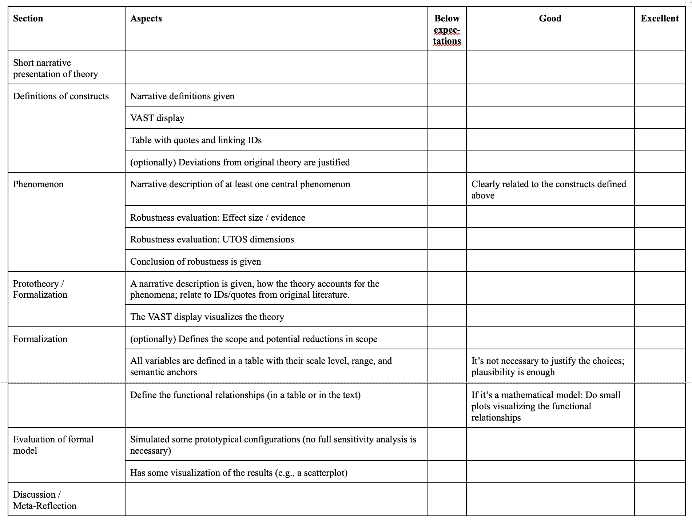

Formal modeling in psychology
Formalia of the course (partly in German)
![]()
Goals
- Learn skills and tools that aid theory
- Technical: Git, semantic versioning, Netlogo, …
- Conceptual:
- How to define a construct
- Visual Argument Structure Tool (VAST)
- (Causal) Control diagrams
- …
- Practice theory formalization with multiple examples
- Understand the advantages and barriers of formal modeling
- High likelihood of “failure”!
- “Hacker’s space” for theory building: We all are learners.
Content
Most session consist of three parts:
- Lectures: gain knowledge
- Skills: learn new tools
- Workshop: Apply tools and knowledge to a research question
All slides, homework instructions, etc. are on this website: https://nicebread.github.io/FOMO-Psy/.
All homework will be submitted to a private Git repo.
Formalia
- Unterricht in Kleingruppen (UK) mit 9 ECTS-Punkten
- ≙ 3 Vorlesungen mit Klausur bzw. 3 Seminare mit Referat & schriftlicher Ausarbeitung
- ≙ 12h Zeitinvestition pro Woche (Präsenz + Vor- und Nachbereitung)
- (in Empra 1: Anwesenheitspflicht laut PStO 2020; max. 2 unentschuldigte Fehlstunden)
- Siehe hierzu § 9 Absatz (3) Sätze 4 bis einschließlich 6 Informationen zur „regelmäßigen Teilnahme“ in der Prüfungs- und Studienordnung 2020: “Eine regelmäßige Teilnahme im Sinne der Anlage 2 ist dann nicht mehr gegeben, wenn Studierende aus selbst zu vertretenden Gründen an mehr als zwei der stattfindenden Veranstaltungstermine einer Lehrveranstaltung nicht teilnehmen.”
- Lektüre der für den jeweiligen Termin angegeben Literatur bzw. gründliche Erledigung der zugeteilten Aufgaben
- Aktive Mitarbeit beim Entwickeln der formalen Modelle und der Programmierung
- Hausarbeit
Hausarbeit
- Schriftgröße 12pt, Zeilenabstand 1.5x
- 15.000 Zeichen +/- 20% (Zählung inkl. Leerzeichen; ohne Deckblatt, Referenzen und Anhänge)
- Wenn Sie in papaja/Rmarkdown schreiben, dann ist das exportierte PDF von der Formatierung her gut so wie es ist (Sie brauchen nicht das Deckblatt, Zeilenabstand etc. anpassen).
- Deckblatt: Titel, Datum, Name, Matrikel-Nr., Name der Veranstaltung
- Bei papaja/Rmarkdown schreiben Sie Datum, Matrikel-Nr. und Name der Veranstaltung in die author notes.
- Kein Inhaltsverzeichnis
- Mindestens 5 Publikationen zitieren
- Zitate & Literaturverzeichnis nach APA-Richtlinien (6. oder 7. Version)
- Die Links zu Präregistrierung, Repositorium mit open code, etc. kommen an den Anfang des Methodenteils
Abgabe Hausarbeit
- Als PDF-Datei per Email an den Dozenten – Empfang wird bestätigt
- Abgabetermin: Wird noch bekannt gegeben, vermutlich Mitte März 2024
- 2 Versionen einreichen:
- Vollständige Version (Dateiname: IhrNachname_Kurztitel_Jahr.pdf) – z.B.: „Schmid_Empra_2020.pdf“
- Anonymisierte Version, bei welcher der Name auf dem Deckblatt gelöscht ist (Dateiname: Matrikelnummer_Kurztitel_Jahr.pdf)
- Diese Version wird benotet.
- Dateiname z.B.:„98234034_Empra_2020.pdf“
- Sie können in papaja einfach eine anonyme Version erzeugen,indem Sie im YAML
mask: yesangeben (siehe hier)
Bewertungsschema Hausarbeit

* bei uns nur bedingt anwendbar …
Benotung
- Wer anwesend ist, aktiv mitmacht, und eine sinnvolle Hausarbeit abgibt bekommt eine (sehr) gute Note
- Es geht um:
- das Engagement
- die Auseinandersetzung mit den Tools und der Materie der Theoriebildung
- eine kritische Reflexion des Prozesses
- Wenn die Theorie, die man sich vorgenommen hat, einfach keine Formalisierung hergibt, dann ist das ein Problem der Theorie (und keine Fehlleistung des Studentys). In dem Fall …
- reflektieren, warum es nicht funktioniert hat
- was wäre notwendig gewesen, um weiterzukommen
- die gemachten Schritte und Hürden dokumentieren
Mögliche Gliederung
(Wird im Laufe des Empras noch gemeinsam entwickelt)
- Introduction to the verbal theory
- Modeling: Describe the model.
- This could be only parts, or intermediate steps if you could not arrive at a final model.
- Next steps: How to measure the components of the model?
- Develop some ideas how parts of the model could be operationalized
- Next steps: How to test a model
- What experiments are optimally suited to test different aspects of your theory/ your model?
- Discussion: Reflection on the processes, what worked well, what didn’t.
End
Contact
- @nicebread@scicomm.xyz
- ed.uml.ysp@tdorbneohcs.xilef
- https://www.nicebread.de
- https://github.com/nicebread